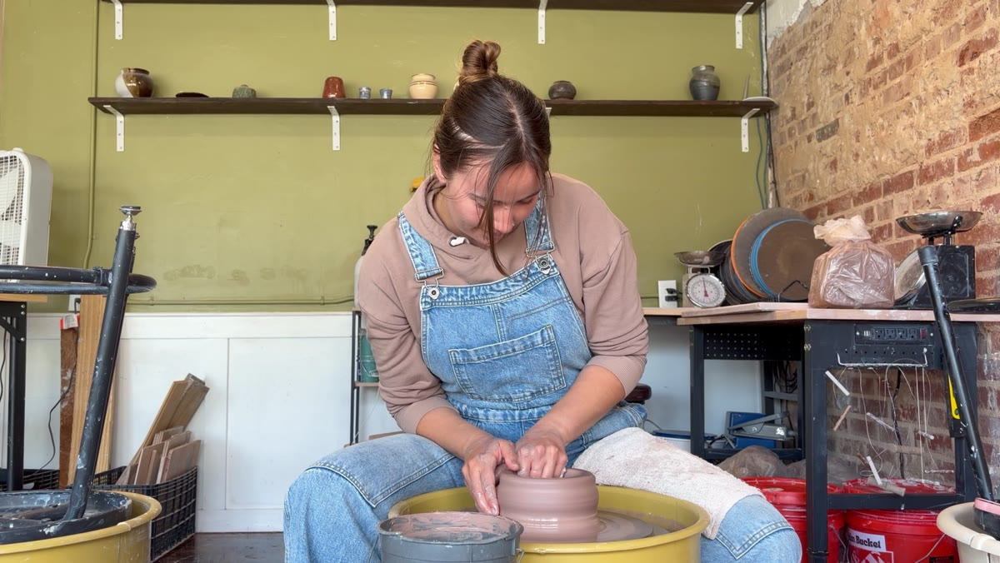
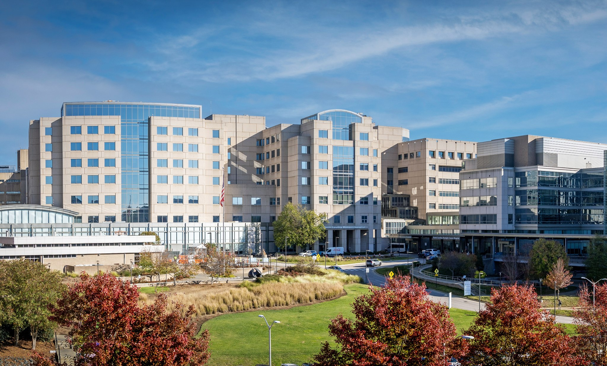

HELLO & WELCOME
Naina
Mishra.
A student interested in medicine, data science, and storytelling.
Scroll to explore ↓ 01 / A LITTLE ABOUT ME
01 / A LITTLE ABOUT MEA LITTLE ABOUT ME
A collection of work.
And everything in between.
I'm a senior at UNC-Chapel Hill studying neuroscience and data science, with a minor in chemistry.
My interests span healthcare, research, and creative work. I enjoy finding new ways to share ideas and tell stories.
Get to know me ↗02 / SELECTED WORK
A few things
I've made.
Projects that gave me a chance to explore something new, from research and data to people and stories.

↗A Place to Take Shape
A story about taking a chance and building community through clay.

↗Making Data Meaningful
Exploring healthcare questions through research and visualization.
03 / AREAS OF INTEREST
What keeps me
curious.
A few of the things I keep coming back to, in and outside the classroom.
Neuroscience & Health
✳Data & Research
✳People & Stories
✳Photography & Creative Work
✳04 / SAY HELLO
Let's keep in touch.
I'm always happy to connect, share ideas, or hear about something new.
Get in touch ↗